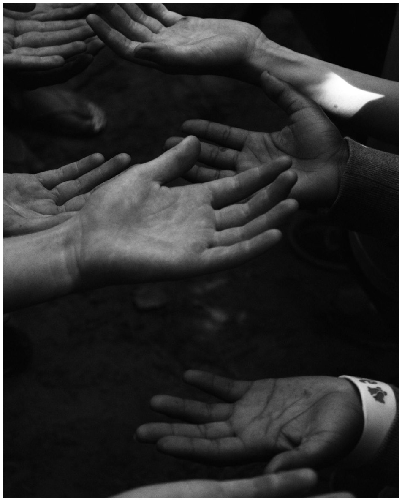
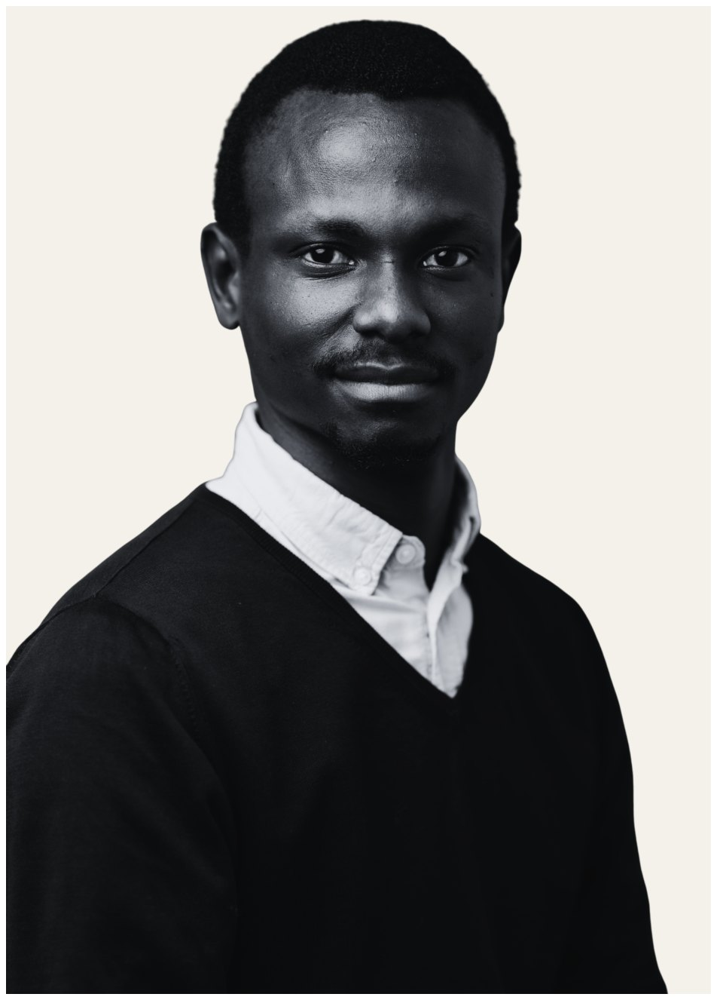
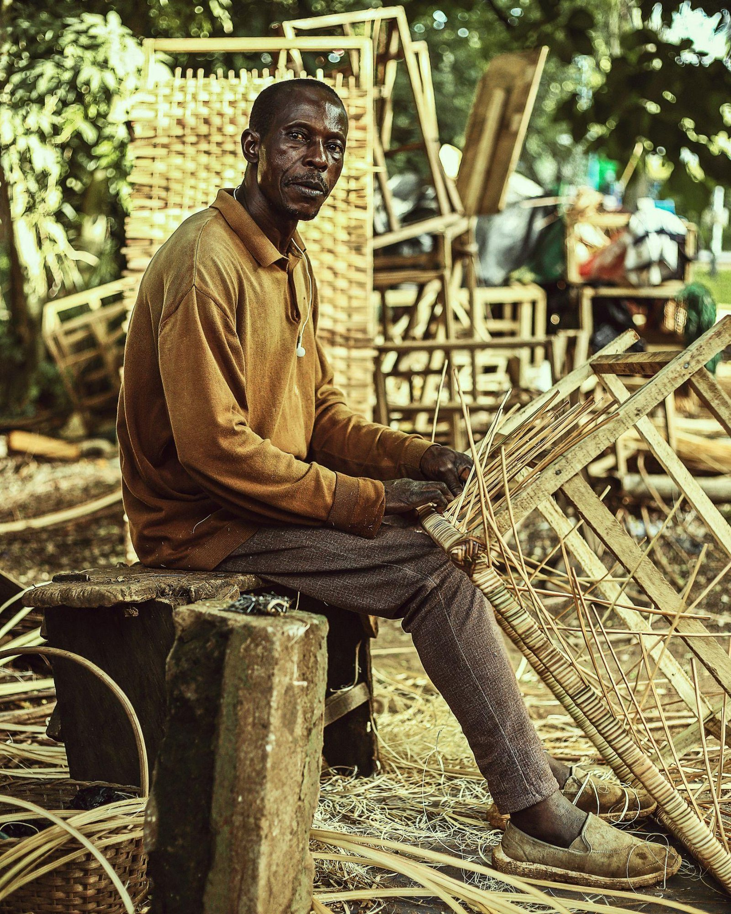
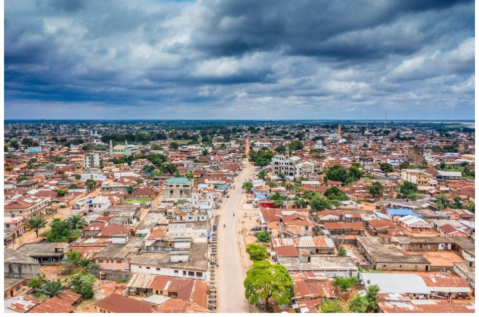
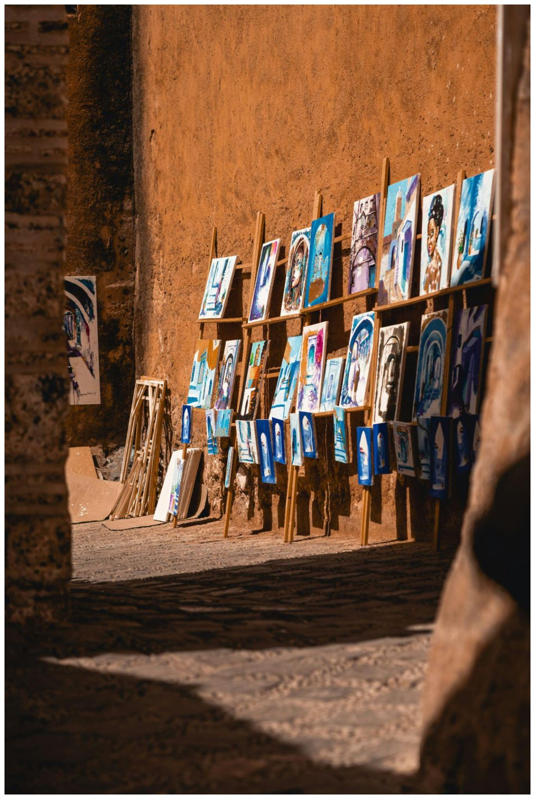

About
Cities that sustain life, rather than erode it.
This began as an attempt to write about people and places. It continues as a long project on how urban, environmental, and social systems shape dignity, development, and lives. It is a working notebook: long-form essays, applied frameworks, and research translated for public use. Not a news feed, and not a technical journal.
How do we put the human at the heart of planning, and of the environment, without falling into a slogan?
My doctoral research at the London School of Economics, defended in June 2025, follows Rue de l’Espoir in Abomey-Calavi. The street, and the municipality around it, is a place where urban development can be read through local languages and masculinities. Fon, Mahi, and Bariba do more than name the city. They show what policy language often misses.
- Doctorate Human Geography and Urban Studies, LSE. A street called hope.
- Fulbright Master’s in Global Environmental Politics, American University, 2017.
- Teaching Associate Fellow of the Higher Education Academy (Advance HE).
- Practice CiAAF, the Civic Academy for Africa’s Future, and SANUS in Benin.
Field notes
Different languages, different worldviews.


